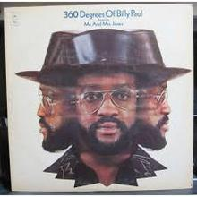
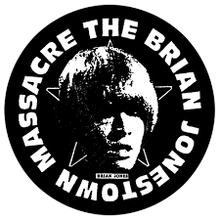
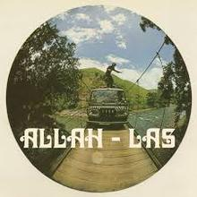

Après deux expériences en finance j'ai plongé dans le monde entrepreneurial à la fois dans la partie produit et commerciale. Le Wagon ? Pour construire et réaliser mes propres projets !!!
See for yourself|  |
Billy Paul, Jazz ManPaul Williams, dit Billy Paul, né le 1ᵉʳ décembre 1934 à Philadelphie et mort le 24 avril 2016 à Blackwood, est un chanteur américain connu pour Me and Mrs. Jones et sa reprise du succès d'Elton John Your Song. |
|  |
The Brians Johnstown Massacre, Psychedelic rockThe Brian Jonestown Massacre est un groupe de rock indépendant américain, originaire de San Francisco, Californie conduit par Anton Newcombe, dont la musique recouvre de nombreux genres parmi lesquels le rock psychédélique, le shoegazing, la new wave, le folk rock, le rock expérimental. |
|  |
Allah-LasAllah-Las est un groupe de rock des États-Unis en Californie formé en 2008 par Miles Michaud, Pedrum Siadatian, Spencer Dunham et Matthew Correia. Correia, Dunham et Siadatian travaillaient ensemble à Amoeba Music avant de former le groupe. |